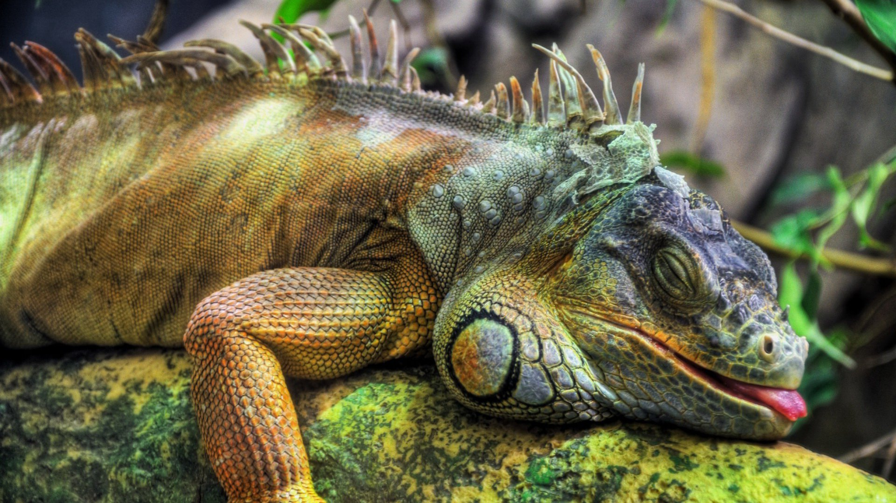

Очень крупные ящерицы, в редких случаях достигающие длины более 2 м. Они характеризуются крупной головой, длинными сильными конечностями и очень длинным хвостом. На спине и передней половине хвоста вдоль хребта располагается гребень, под нижней челюстью свисающий горловой мешок.